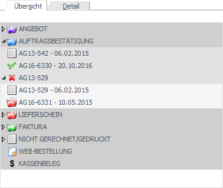
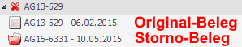
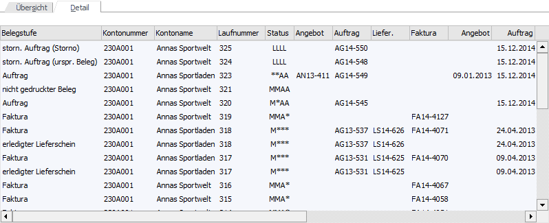
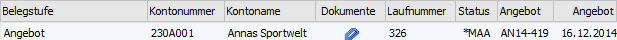

In dem Register "Allgemein" findet die Grundselektion und die Anzeige der Belege statt. Zusätzlich können die Belege bearbeitet bzw. neue Belege erfasst werden.

Grundselektion
Mit Hilfe der folgenden Eingabefelder kann eine Grundselektion für die Anzeige der Belege getroffen werden. Hierbei wird der Inhalt der folgenden Felder benutzerspezifisch gespeichert:
ü Sortierung
ü Interessenten anzeigen
ü Belegstufen
Ø Konto
Wenn nur die Belege eines bestimmten Kontos dargestellt werden sollen, dann kann an dieser Stelle die entsprechende Kontonummer hinterlegt werden. Ansonsten wir das Feld freigelassen.
Hinweis
Beim ersten Öffnen des Belegmanagements wird dieses Feld automatisch mit der zuletzt verwendeten Kontonummer vorbelegt.
Ø Belegnummer
Für die Suche nach einem bestimmten Beleg kann hier die Belegnummer eingegeben oder über den Matchcode gesucht werden. Das Ergebnis der hier angebotenen Autovervollständigung ist abhängig von den ausgewählten Belegstufen.
Hinweis
Durch Drücken der F3-Taste kann der letzte Beleg (Kontonummer - Laufnummer) übernommen werden, wobei insgesamt die letzten 20 Belege zur Verfügung stehen. Wird die Eingabe mit der Enter-Taste bestätigt, so wird das Feld "Kontonummer" gefüllt und der Beleg sofort angezeigt. Mit der Tastenkombination SHIFT+F3 kann die Reihenfolge umgekehrt werden.
Ø Projektnummer
Die Einschränkung der Anzeige der Belege kann auch nach der Projektnummer erfolgen, wobei die Projektnummer des Beleg-Kopfs für die Selektion herangezogen wird.
Ø Kostenträger
Es kann bei der Suche nach Belegen auf bestimmte Kostenträger beschränkt werden, wobei der Kostenträger des Beleg-Kopfs für die Selektion herangezogen wird.
Ø Datum
Es kann nach Belegen innerhalb eines bestimmten Belegdatums gesucht werden.
Ø Sortierung
Die Sortierung der Belege kann innerhalb eines Kontos bzw. einer Belegstufe nach
ü Laufnummer
ü Belegnummer
ü Belegdatum
wahlweise auf- oder absteigend erfolgen.
Ø Kunden / Lieferanten / Kunden u. Lieferanten
Für den Fall, dass keine Hinterlegung im Feld "Konto" stattgefunden hat, kann an dieser Stelle bestimmt werden, ob nur die Belege von Kunden, von Lieferanten oder von Kunden und Lieferanten angezeigt werden sollen.
Ø Interessenten anzeigen
Ergänzend zu der Auswahl "Kunden / Lieferanten / Kunden u. Lieferanten" kann hier definiert werden, ob Belege von Interessenten aufgeführt werden sollen.
Ø Belegstufen
Durch Markieren der Checkboxen wird bestimmt, welche Belegstufen angezeigt werden sollen bzw. ob nicht gerechnete / gedruckte Belege ebenfalls zu berücksichtigen sind. Durch die Checkbox "Web-Bestellung" kann definiert werden, ob die Belege aus der WinLine WEB Edition angezeigt werden sollen oder nicht.
Wenn die Option "Kassenbelege" aktiviert ist werden alle geparkten Belege aus dem Kassendashboard angezeigt. Dies sind jene Belege die in der Kasse erfasst, aber noch nicht mittels einer Zahlung fertig gestellt wurden.
Unterregister "Übersicht"

Im Unterregister "Übersicht" werden die Belege (pro Konto) in Form einer Baumstruktur dargestellt. Hierbei wird mit Hilfe von Icons auf den jeweiligen Status des Belegs hingewiesen.
Hinweis
Per Doppelklick auf einen Beleg kann dieser am Bildschirm dargestellt werden (nähere Information hierzu entnehmen Sie bitte dem Kapitel "Belegmanagement - Register "Allgemein" - Aktionen", Button "Beleginfo").
ü - offener Beleg
Alle Belege, welche in
der folgenden Belegstufe noch nicht komplett bearbeitet wurde, werden als offene
Belege gekennzeichnet und können bearbeitet werden.
Hinweise
Auch Fakturen weisen diesen Status auf. Eine Bearbeitung ist allerdings nur so lange möglich, bis die Faktura auf Seite der WinLine FIBU verbucht wurde.
ü - erledigter Beleg
Alle Belege, welche
in der folgenden Belegstufe bereits komplett bearbeitet wurde, werden als
erledigte Belege gekennzeichnet. Diese Belege sind nicht mehr editierbar, können
aber als Grundlage für eine Kopie verwendet werden.
ü - gelöschter Beleg
Alle Belege, welche
gelöscht würden, werden als gelöschte Belege gekennzeichnet.
Hinweis
Wenn in den Applikationsparametern der FAKT definiert wurde, dass eine Kopie des stornierten Belegs erstellt werden soll (WinLine START - Applikationsparameter - FAKT-Parameter - Belege - Belegstorno - Option "Kopie des stornierten Belegs erstellen), dann wird unterhalb des stornierten Belegs der Original- und der Storno-Belege ausgewiesen.
Beispiel

Unterregister "Detail"

Im Unterregister "Detail" werden die Belege in Form einer Tabelle dargestellt. Hierbei stehen im Gegensatz zur Baumstruktur zusätzliche Informationen zur Verfügung, welche über die Funktion "Spalten anzeigen / verstecken" (rechte Maustaste) verändert werden können.
Hinweis
Per Doppelklick auf einen Beleg kann dieser am Bildschirm dargestellt werden (nähere Information hierzu entnehmen Sie bitte dem Kapitel "Belegmanagement - Register "Allgemein" - Aktionen", Button "Beleginfo").
Ø Belegstufe
In diesem Feld wird die Belegstufe ausgewiesen.
Ø Kontonummer / Kontoname
In diesen Spalten werden die Kontonummer und der Kontoname aus dem Belegkopf dargestellt.
Ø Laufnummer
In dieser Spalte wird die jeweilige Laufnummer des Belegs angezeigt.
Ø Status
An dieser Stelle wird der Belegstatus dargestellt.
Ø Angebot / Auftrag / Lieferschein / Faktura
In diesen Spalten werden die Belegnummern bzw. die Belegdaten (Datum) angezeigt.
Ø Kostenträger
Ausweisung des Kostenträgers aus dem Belegkopf
Ø Projekt
Ausweisung des Projekts aus dem Belegkopf.
Ø Text / Text 2
Anzeige der Belegkopfnotiz 1 und der Belegkopfnotiz 2 des Belegs.
Ø Notiz
An dieser Stelle werden die ersten 50 Zeichen der Belegnotiz angezeigt.
Hinweis
Dieses Feld steht nur zur Verfügung, wenn die Option "Notiz anzeigen" im Register "Erweiterte Suche" aktiviert wurde.
Ø Dokumente
Wenn zu einem Beleg externe Dokumente hinterlegt wurden, dann wird hierauf in Form eines Icons hingewiesen.
Beispiel

Ø Grund für Storno
Wenn bei dem Storno eines Belegs ein Grund angegeben wurde, so kann dieser in diesem Feld angezeigt werden.